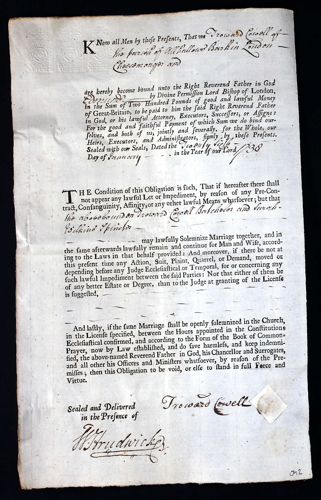

Sarah Cowell (née Wilkins) c1714 -
[ Home ] | [ Calendar ] | [ Surnames Index ] | [ Family History ]Sarah Wilkins, the wife of Troward Cowell (the six times great-uncle of Nigel Horne), was born c. 17141 and married Troward (a cheesemonger with whom she had 2 children: Alice Troward and Troward) at St Peter-upon-Cornhill Church, Cornhill, London, England on Jan 26, 17381 (Civil marriage in All Hallows, Barking, then parish marriage the next day at St Peter upon Cornhill). In 1755, she lived in at Tower Street, London.
Children
- Alice Troward was born on Dec 3, 1739
- Troward was born c. 1748
Citations
- London and Surrey, England, Marriage Bonds and Allegations, 1597-1921 Online publication - Provo, UT, USA: Ancestry.com Operations, Inc., 2011.Original data - Marriage Bonds and Allegations. London, England: London Metropolitan Archives. Surrey Marriage Bonds and Allegations records held by the London Metropolitan Archives,
Media
Troward Cowell - Sarah Wilkins - marriage bond

Leeds Intelligencer - 2 Dec 1755

Family Tree

Generated by Ged2Site. Last updated on Jul 20, 2025